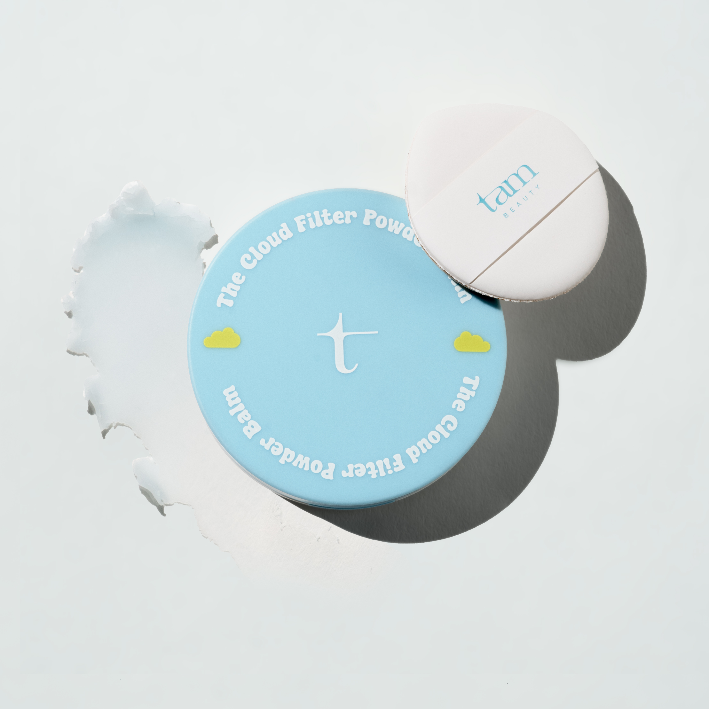
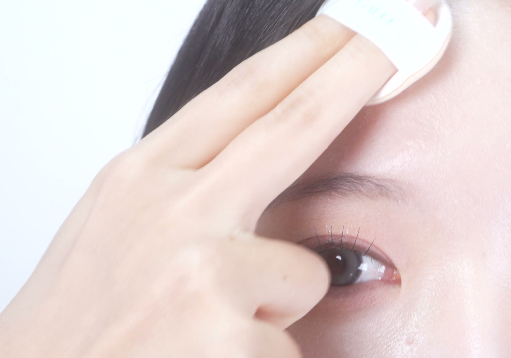
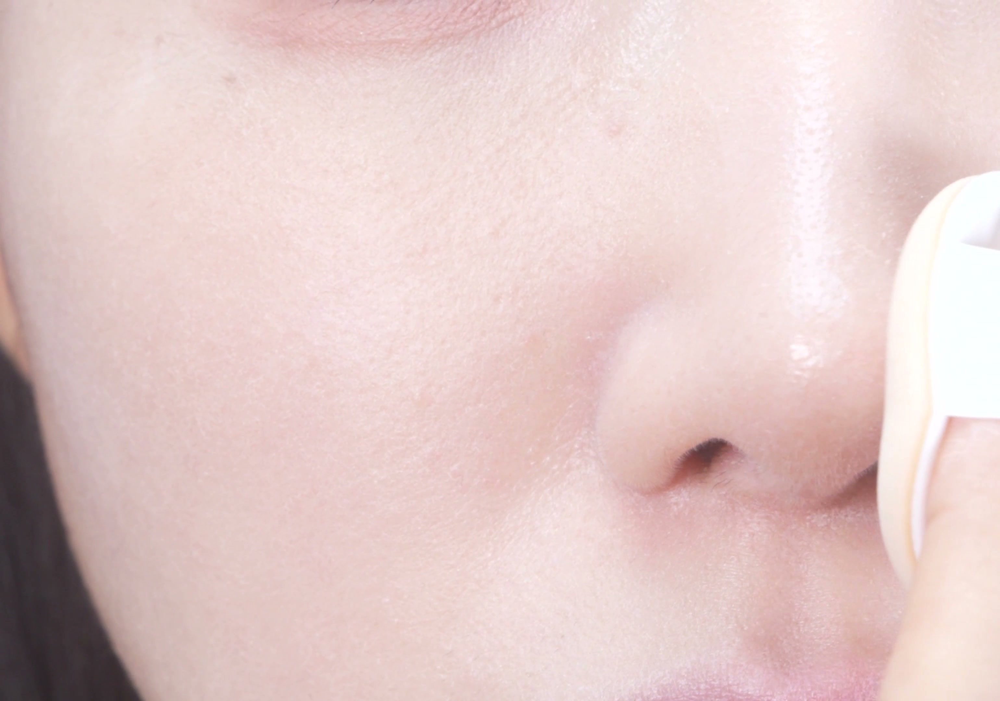
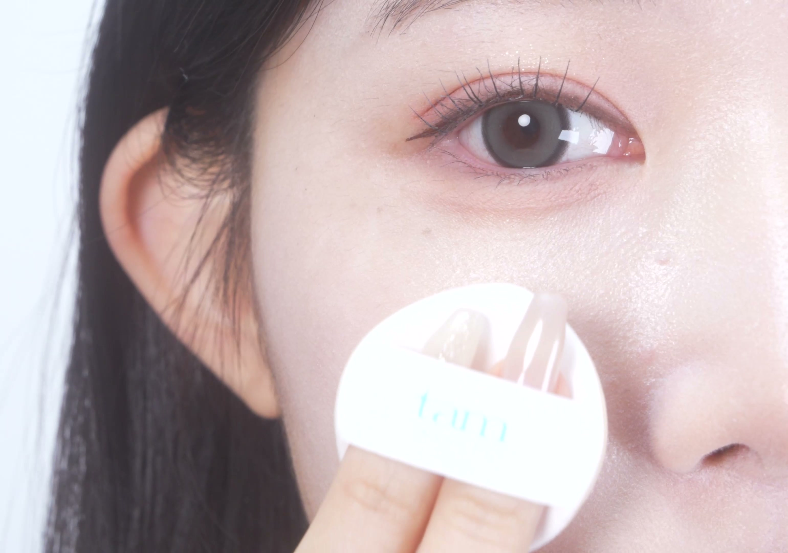
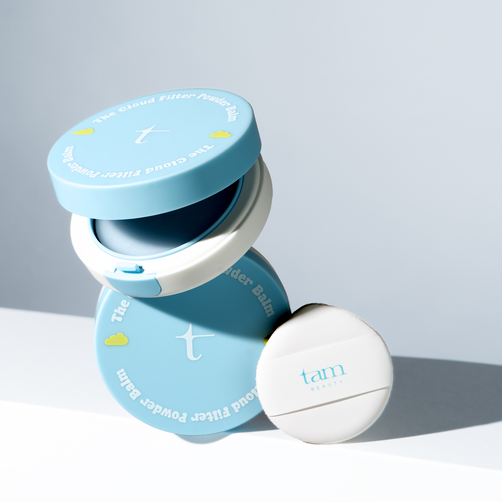

번들거림 잡고,
피부결까지 매끈하게.
코·이마의 번들거림과 모공 부각을 정돈하는
밤 타입 파우더.

코·이마, 필요한 곳에 톡톡.

이마 · T존

코 · 콧볼
SOFT BLUR FINISH
유분은 가볍게 정리하고,
모공은 부드럽게 블러.
유분이 신경 쓰이는 코 옆 나비존까지.
소량씩 두드려 매끈한 피부 표현을 완성해요.

메이크업 효과이며, 사용 결과는 개인에 따라 다를 수 있습니다.
BALM TO POWDER
밤으로 얇게,
마무리는 보송하게.


흩날리는 가루 대신, 부드러운 고체 밤.
퍼프로 얇게 펴 바르는 파우더예요.
ONE BALM, THREE MOMENTS
프라이머부터 수정 화장까지,
작은 밤 하나로.
01
메이크업 전
모공이 신경 쓰일 때, 프라이머로
베이스를 바르기 전, 코 옆과 요철이
신경 쓰이는 부위에 얇게 발라주세요.
02
메이크업 후
보송하게 마무리할 때, 파우더로
베이스 메이크업 후 번들거리는 부위를
가볍게 두드려 마무리해주세요.
03
외출 중
유분이 올라올 때, 기름종이처럼
수정이 필요한 부위에 소량씩 톡톡.
내장 거울과 퍼프로 간편하게 정리해요.
HOW TO USE
많이 말고, 조금씩.
쓸지 말고, 톡톡.
1
퍼프에 소량 묻혀주세요.
사용 전, 티슈나 화장솜으로
내용물 표면을 가볍게 닦아주세요.
2
손등에서 한 번, 양을 조절해요.
얼굴에 바르기 전, 퍼프를 손등에
가볍게 쓸어 내용물이 고르게 묻게 해주세요.
3
유분이 있는 부위에 가볍게 두드려요.
코·콧볼·이마 등 필요한 부위에 톡톡.
얼굴을 쓸어내리지 않고 밀착시켜주세요.
한 번에 많이 바르기보다, 필요한 곳에 얇게 사용해주세요.

THE CLOUD FILTER POWDER BALM
더 클라우드 필터 파우더 밤
3.5g · 거울 & 퍼프 내장